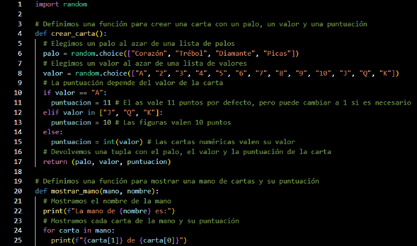

Pasos
Comenzaremos creando una carpeta
La nombraremos a preferencia. Esta carpeta la pegaremos a nuestro editor de código, en este caso Visual Studio.
Dentro de esta carpeta en nuestro editor, crearemos un nuevo archivo y nombraremos “blackjack”.
Para crear un archivo buscaremos este boton
Dentro de nuestro archivo nuevo ya nombrado empezaremos a colocar el código
Primera parte

En esta parte lo que se empieza es con un import random, también defenimos los valores de las listas y su correspondiente puntuación añadida.
A partir de la línea 19 se muestra el código de lo que será las manos de los participantes y su puntuación.
Segunda parte
Continuamos la parte anterior con las puntuaciones de las manos participantes, se muestra el valor total y su devolución de puntaje
Línea 39 se expresa un código para crear cartas y colocarlas en las manos de los jugadores.
Tercera parte
Dependiendo del puntaje que se obtiene creamos un while que ayudara a si un jugador quiere seguir jugando, dependiendo su puntaje obtenido.
Esto con un IF nos ayudara a saber la respuesta expresada en S y N los cuales son si o no.
Si el jugador no introduce una de las opciones se le marcara error para que vuelva a responder.
También usamos otro IF en línea 72 para mostrar su el jugador ya se paso del limite y este mismo marque que ya perdió.
Cuarta parte
Aquí se muestra la función para que el jugador pida otra carta mientras este tenga puntaje de 16 o menor a este.
Con el código usado en línea 90.
La parte final muestra el resultado ganador usando el if de línea 98 que en si es si la casa tiene la puntuación de 21 esto al obtenerlo en automático le aparecer a la leyenda de “HAS GANADO”.
Parte final

Se comparan resultados de la casa y el jugador donde si la del jugador es mayor a la de la casa este ultimo gana, si es al contrario pues este pierde y le sale el resultado de “HAS PERDIDO”
Si ninguno de los 2 es el caso este muestra un empate y con el anuncio de “HAY UN EMPATE”
Ejecución

Esto ejecutado saldría algo así
Se muestra lo dicho anterior mente como la selección de S y N, los valores de corazon, trebol y diamante, entre las tras cosas.